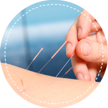

1手臂吸脂
2面部吸脂
3腰腹吸脂
4背部吸脂
5腿部吸脂
6臀部吸脂
节食减肥每天热量摄入不足，会造成食欲 大增、新陈代谢缓慢，减肥效果难预见且很难控制，一旦恢复正常进食，只会雪上加霜。
运动减肥运动量小，没有效果，运动量太 大，身体接受不了，中途容易放弃;一旦停止运动，食欲增大程度和反弹速度与节食不相上下。
药物减肥与节食和运动相比，最伤身的减肥 方法，副作用多，对身体不可名状的伤害极大，埋下健康隐患，且一旦 停用，100%反弹。

中医减肥中医减肥需要一定的疗程， 时间长、见效慢，对身体没有副作 用，可以调理身体。
智能立体吸脂技术，能够自动避开血管，神经等组织，定位精确，不影响生理结构。
创口大小如2mm发丝 ，手术恢复后不留疤痕。
减少脂肪绝对数量，限制脂肪细胞增大，一次吸脂，受益终身。
360°聚能震波吸脂紧肤术，术后令肌肤紧致、光滑且更有弹性。
精确吸取多余脂肪的同时重塑形体线条。
手术时间短，无痛苦，不影响工作和生活。
 自体组织来源于自身，无毒害无排斥，取于自身，用于自身。可以用于充填面颊凹陷，颧部过低、颞部凹陷、前额不饱满、眶区的凹陷，面部手术或外伤所导致的凹陷等都可以应用自体脂肪面部填充。术后安全无排异反应，可达到雕塑五官的效果。
自体组织来源于自身，无毒害无排斥，取于自身，用于自身。可以用于充填面颊凹陷，颧部过低、颞部凹陷、前额不饱满、眶区的凹陷，面部手术或外伤所导致的凹陷等都可以应用自体脂肪面部填充。术后安全无排异反应，可达到雕塑五官的效果。